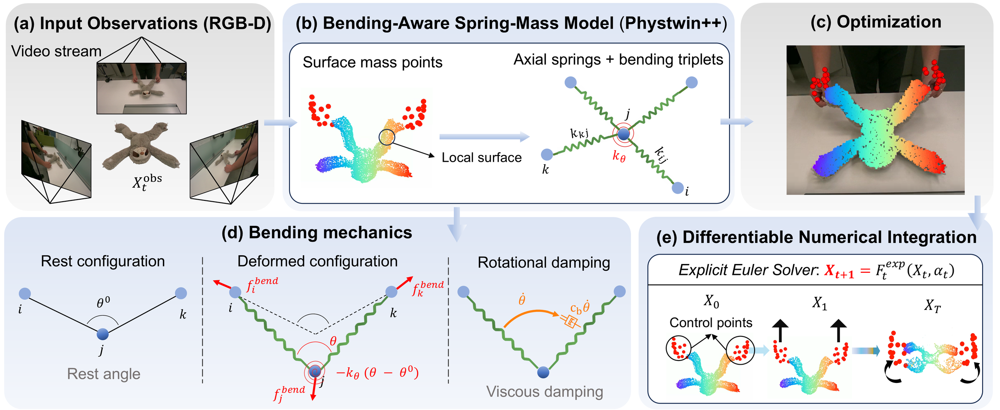

← Publications
Y. Jing, L. Chen, J. Jiang, G. Wang, W. Ma, H. Wu, O. Wysocki, B. Sheil
arXiv preprint, 2026

TODO — paste the BendTwin abstract here. This field is required because "page": true is set, which generates papers/bendtwin/index.html.